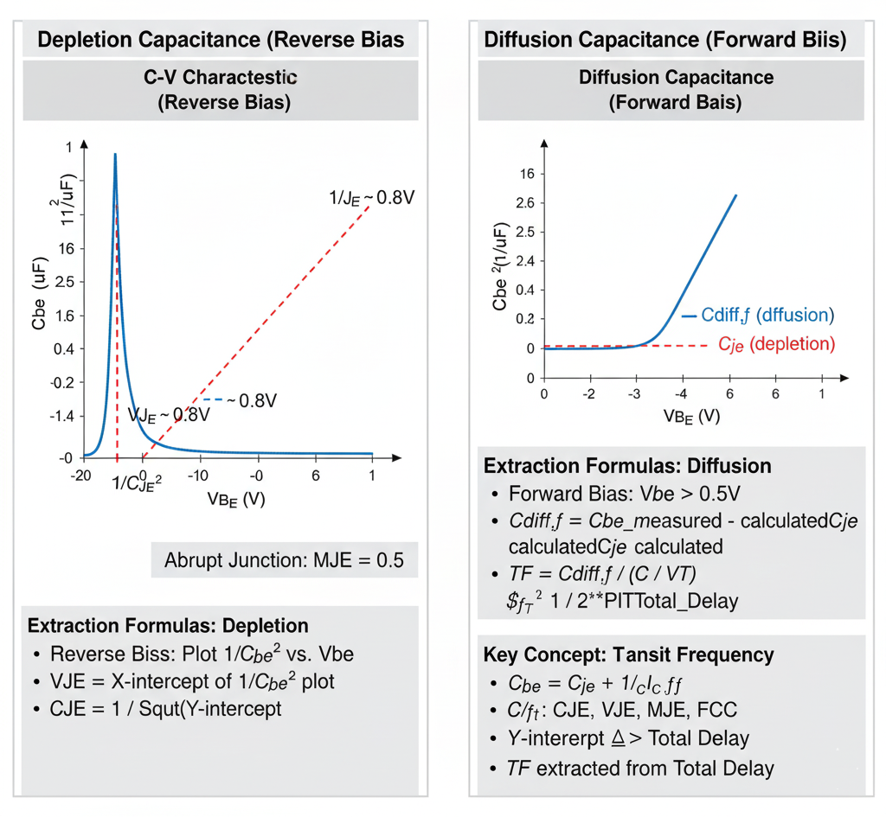

Extraction of bipolar SPICE Gummel-Poon parameters related to B-E junction Capacitance-Voltage (C-V) 
Theory
Introduction:
BJT B-E Junction C-V Parameter Extraction

Fig. 1. BJT Base-Emitter C-V Characteristics & Parameter Extraction
Introduction
The base-emitter (B-E) junction capacitance ($C_{be}$) is a crucial parameter in the BJT SPICE model, as it directly impacts the high-frequency performance (gain) and switching speed of the transistor.
Like any p-n junction, the total B-E capacitance is modeled as the sum of two distinct physical components:
- B-E Depletion Capacitance ($C_{je}$): This is the capacitance of the B-E depletion region (or space-charge region). It is dominant when the junction is reverse-biased.
- B-E Diffusion Capacitance ($C_{diff,f}$): This is the capacitance caused by the storage of minority carriers (e.g., electrons injected into the P-type base). It is dominant when the junction is forward-biased.
The total capacitance is $C_{be} = C_{je} + C_{diff,f}$. These two components are modeled by different sets of parameters and must be extracted separately.
1. Depletion Capacitance ($C_{je}$)
This component models the fixed, "uncovered" charge in the depletion region, just like a standard parallel-plate capacitor.
Key SPICE Parameters
CJE(B-E Zero-Bias Capacitance): The value of the depletion capacitance when the applied B-E voltage is zero. (Also known asCBE).VJE(B-E Built-in Potential): The built-in potential (contact potential) of the B-E junction (e.g., ~0.7-0.9V for silicon). (Also known asPBE).MJE(B-E Grading Coefficient): Describes the doping profile of the junction (e.g., 0.5 for abrupt, 0.33 for graded). (Also known asME).
Extraction Method: Reverse-Bias C-V Plot
To extract these parameters, the B-E junction is measured like a diode. The capacitance is measured while applying a reverse-bias voltage ($V_{BE} < 0$). In this condition, the diffusion capacitance is zero, so the measured capacitance $C_{meas}$ is equal to $C_{je}$.
The model equation is: $$C_{je} = \frac{CJE}{(1 - V_{BE} / VJE)^{MJE}}$$
To extract the parameters, this non-linear equation is linearized. For an abrupt (step-graded) junction, we assume MJE = 0.5. The equation can then be rearranged and plotted as:
$$\frac{1}{C_{je}^2} \text{ vs. } V_{BE}$$
This plot yields a straight line.
Extraction Procedure:
- Plot Data: Measure $C_{be}$ at several reverse-bias $V_{BE}$ points. Plot the inverse capacitance squared ($1/C_{be}^2$) on the y-axis against the reverse voltage ($V_{BE}$) on the x-axis.
- Extract
VJE: Extrapolate the straight-line fit to the x-axis (where $y=0$). This voltage intercept is the B-E Built-in Potential (VJE). - Extract
CJE: The y-intercept (at $V_{BE} = 0$) is equal to $1/CJE^2$. Therefore, the B-E Zero-Bias Capacitance (CJE) is calculated from the intercept. - Verify
MJE: If the plot is a straight line, the assumption ofMJE = 0.5is valid. If the plot is curved, a differentMJE(like 0.33 for a graded junction) might be needed, which would require a $1/C_{be}^3$ plot.
2. Diffusion Capacitance ($C_{diff,f}$)
This component models the charge of minority carriers injected into the base during forward-bias operation. It is often the dominant factor limiting a BJT's switching speed.
Key SPICE Parameter
TF(Forward Transit Time): This is the key parameter. It represents the average time it takes for an injected minority carrier to travel from the emitter, across the base, to the collector junction. A smallerTFmeans a faster transistor.
The Model Equation
The diffusion capacitance is directly proportional to the forward transit time and the rate of change of the collector current with respect to $V_{BE}$.
$$C_{diff,f} = \frac{dQ_f}{dV_{BE}} = TF \cdot \frac{dI_C}{dV_{BE}} \approx TF \cdot \left( \frac{I_C}{V_T} \right)$$
This shows that $C_{diff,f}$ is not constant; it is proportional to the operating current $I_C$.
Extraction Method: Forward-Bias Measurement
TF must be extracted while the BJT is in the forward-active region.
Method A: Forward-Bias C-V
- Measure Total Capacitance: Apply a forward bias $V_{BE}$ (e.g., 0.6V) and measure the total B-E capacitance, $C_{be,total}$.
- Measure DC Current: At the same $V_{BE}$, measure the DC collector current, $I_C$.
- Calculate Depletion Part: Use the parameters
CJE,VJE, andMJE(extracted from the reverse-bias plot) to calculate the value of the depletion capacitance $C_{je}$ at this forward-bias $V_{BE}$. - Isolate Diffusion Part: Subtract the calculated depletion capacitance from the total measured capacitance: $$C_{diff,f} = C_{be,total} - C_{je}$$
- Calculate
TF: Rearrange the model equation to solve forTF: $$TF = C_{diff,f} \cdot \left( \frac{V_T}{I_C} \right)$$
Method B: Transition Frequency ($f_T$)
A more common and accurate method is to extract TF from high-frequency (S-parameter) measurements. The transition frequency ($f_T$) is the frequency at which the BJT's current gain drops to one.
TF is a primary component of the total delay that determines $f_T$. By plotting $1/f_T$ versus $1/I_C$, a straight line is often obtained. The y-intercept of this plot is related to the total forward transit time, allowing for the extraction of TF.